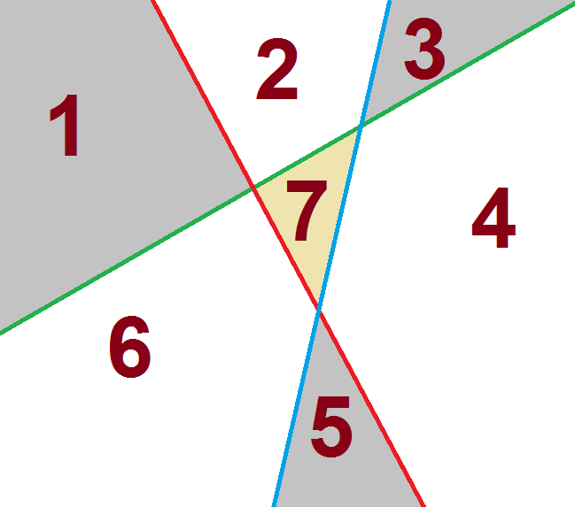

Sài Gòn mưa tầm mưa tã, mưa rả rích đêm ngày, mưa tối tăm mặt mũi, mưa thối đất thối cát,... Mưa đến mức làm Nam quyết định hôm nay sẽ học bài, không đi chơi như mọi hôm nữa. Mà bị cái là lâu lắm rồi Nam chả học hành gì cả. Một chữ bẻ đôi cũng không học. Cho nên là có cái bài Toán dễ ơi là dễ mà Nam cũng làm không được. Bó tay rồi! Giúp Nam với các bạn :(
Bài toán dễ-ơi-là-dễ đó như sau: n đường thẳng cắt nhau đôi một sẽ chia mặt phẳng thành bao nhiêu vùng khác nhau nếu như biết là không có 3 đường thằng bất kì nào đồng quy?
Input: n (số tự nhiên không quá 100)
Output: x (số tự nhiên là đáp án bài toán)
